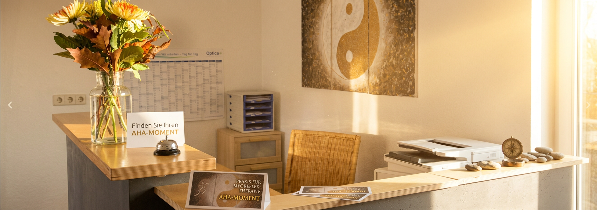

Manuelle Therapie, Myoreflextherapie und individuelle Physiotherapie — seit über 30 Jahren mit einem erfahrenen Team an zwei Standorten für Sie da.
Drei Schwerpunkte, die auf Ihren individuellen Bedarf abgestimmt werden.
Von Kinesio-Taping über Faszienbehandlung bis Beckenbodentraining — individuell abgestimmte Behandlungskonzepte für Alltag und Sport.
Mehr erfahren →Gezielte Handgriff- und Mobilisationstechniken lösen Blockaden und stellen das Zusammenspiel von Gelenken, Muskeln und Nerven wieder her.
Mehr erfahren →Ein ganzheitlicher Therapieansatz nach Dr. Kurt Mosetter, der körperliche und muskuläre Zusammenhänge über Reflexpunkte behandelt.
Mehr erfahren →Basler Landstraße 107
79111 Freiburg im Breisgau
Tel: 0151 / 19119111
Termin in Freiburg buchenObere Dorfstr. 1
75210 Keltern-Weiler
Tel: 07236 / 980134
Termin in Keltern-Weiler buchenPhysiotherapeutin, Manualtherapeutin
Physiotherapeutin, Bobath Kinder
Physiotherapeutin, Manuelle Therapie
Physiotherapeutin, Lymphdrainage
Drei einfache Übungen für den Alltag.
Kleine Änderungen mit großer Wirkung.
Ein Überblick über den Behandlungsansatz.